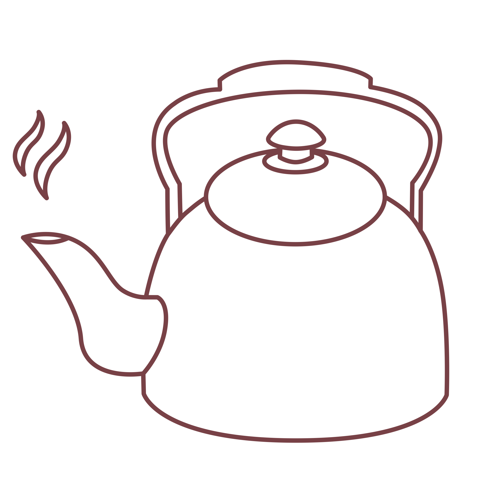
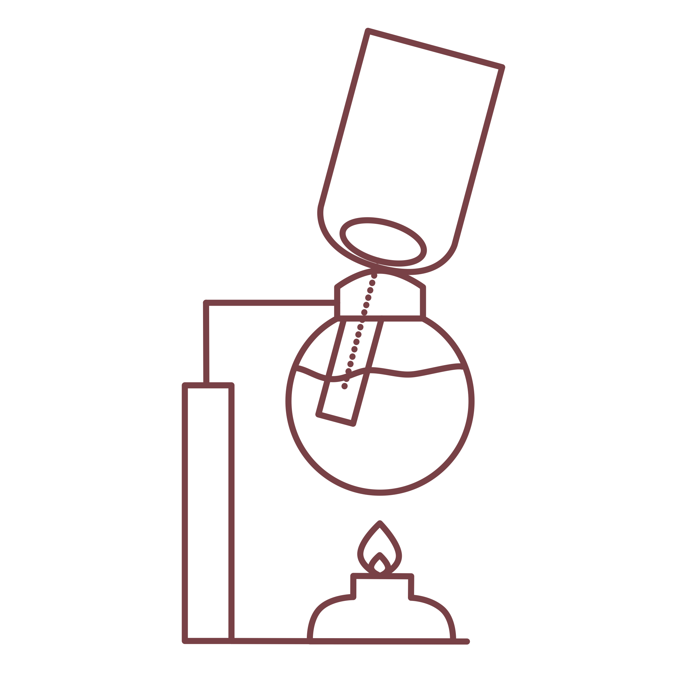

oroma
siphon
benefits
Coffee was founded in Oromo, Africa in 1XXX. It can be found all over the world and in different ways. Coffee was founded in Oromo, Africa in 1XXX. It can be found all over the world and in different ways. Coffee was founded in Oromo, Africa in 1XXX. It can be found all over the world and in different ways.
what you need
kettle (or boiling water)
ground coffee (medium setting)
siphon rig
spoon
timer
01
Boil your water, making sure to have enough for your siphon beaker (about 400 mL).
02
Disassemble your siphon rig.
03
Fill the bottom beaker with the hot water.
04
Turn on the gas for your butane burner (high). Set the top beaker just over the bottom beaker, but leave it on loose (on a slight angle) so it does not seal.
05
Once the water in the bottom beaker boils, set the top beaker on straight vertically so it forms a seal. Once the water is drawn into the top beaker, lower the heat on the burner.
06
Add 40 grams (6-7 tbsp) of coffee to the top beaker, and give it a stir (about 10 stirs).
07
Set a timer for 1 minute and 45 seconds.
08
After the timer ends, cut the heat on the burner and quickly stir the coffee in the top beaker (about 5 stirs).
09
Since the heat is removed, this will begin the draw down where the coffee is released back into the bottom beaker. This takes about 1 minute.

10
Serve the coffee straight from the bottom beaker.